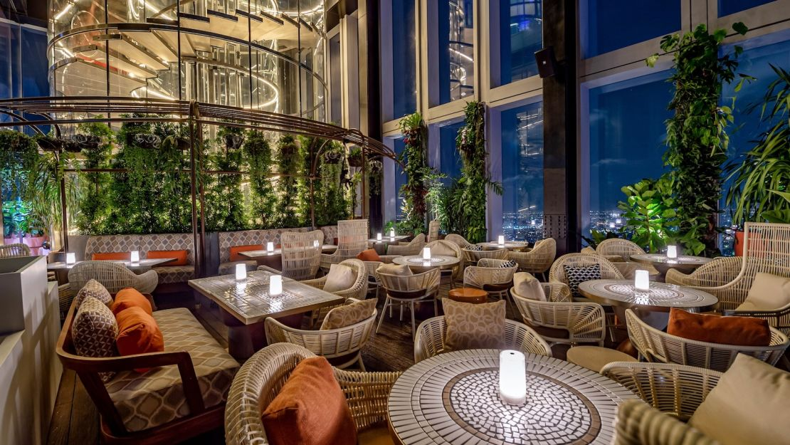
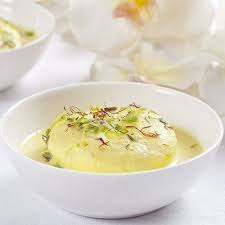
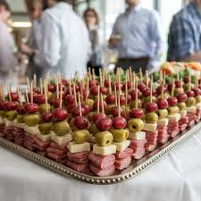
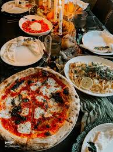
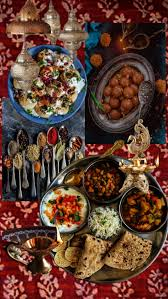
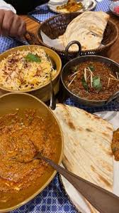

ABOUT US
Celebration restaurent has served fresh,flavourful dishes since 2005. Our mission is to bring happiness to your plate with every bite .our restaurant is known for its warm ambiance, fresh ingredients, and handcrafted meals made with love. Thank you for being part of our journey. We look forward to serving you — again and again.
our menu
Rasmalai
the texture of our rasmalai is the heart of its allure: the final touch of elegance comes from the garnish of silvered almonds and pistachios,adding a delicate crunch and a beautiful visual contrast.A soft delight for your senses .A royal Indian delicacy, Rasmalai features soft, spongy cheese dumplings gently soaked in a rich, saffron-infused milk, delicately flavored with cardamom and garnished with slivers of pistachios and almonds. Served chilled, this exquisite dessert offers a melt-in-the-mouth experience, perfect for a sweet finale.
.jpeg)
PAO BHAJI
A vibrant and hearty street food ,thick savoury vegetable cury,known as BHAJI is generously topped with a dollop of butter, finely chopped onions,and fresh cilantro the contrast between the soft bread and spicy bhaji mash is what makes the dish so addictive. Pav Bhaji is a luscious blend of mashed seasonal vegetables slow-cooked in aromatic spices, served piping hot with a dollop of butter. Accompanied by soft, butter-toasted pav (bread rolls) and a side of chopped onions and lemon, this hearty dish is a soulful celebration of Mumbai's culinary charm.
Gallery
an artful presentation of gourmet hors d'oeuvres, these elegant skewers feature a vibrant medley of cured meats, artisan cheeses, olives, and grapes — each one meticulously arranged to offer a perfect balance of savory, creamy, and sweet flavors. Displayed on a silver platter with precision and symmetry, this spread is ideal for upscale gatherings, cocktail parties, or sophisticated buffets, inviting guests to indulge in effortless elegance, one bite at a time.
 An inviting tablescape of authentic Italian indulgence — featuring a hand-tossed Margherita pizza with blistered crust, rich tomato sauce, and creamy mozzarella, paired with a delicate lemon-infused pasta crowned with shaved parmesan and fresh herbs. Surrounded by vibrant antipasti, artisanal breads, and candlelit charm, this ensemble evokes the warmth of a Tuscan gathering, where every dish tells a story of tradition, flavor, and togetherness.
grand celebration of Indian culinary artistry, this majestic thali offers a harmonious medley of traditional flavors and textures. From fragrant jeera rice, buttery dal, and vibrant sabzis to crisp papad, creamy raita, and freshly griddled rotis — each element is crafted to perfection. Accompanied by beloved classics like tangy dahi bhalla, syrup-soaked gulab jamun, and a kaleidoscope of aromatic spices, this feast is a tribute to India’s rich cultural heritage served on a single, ornate platter. Perfect for those who savor diversity in every bite.

A bold and irresistible medley of classic American street eats, this indulgent spread features gourmet hot dogs topped with everything from tangy relish to spicy jalapeños, golden crispy onion rings, seasoned fries, corn dogs, and melt-in-your-mouth burgers. Paired with frosty pints of craft beer, this hearty platter is perfect for sharing — a celebration of bold flavors, fun textures, and pure comfort served in every bite/;9.
EVENTS AND CATERING
Book us for wedding,birthdays or corporate events. we provide full-service catering for all occasions guarateed happiness from our customers
CUSTOMER TESTIMONIALS
"food was really very very amazing,to be honest the services was also very amazing
"best restaurent experience ever! highly recommend."
"the service was very good and the food was also amazing"
"the restaurent is very hygenic and the food tastes amazing"
FAST!reserve your table now
contact us
Emai:shambhavimisha8@gmail.com
phone:+91-9919772652
Address:123 flavour street,food city